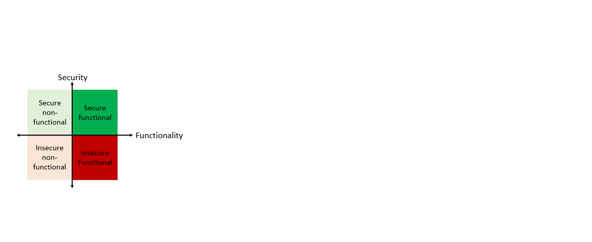
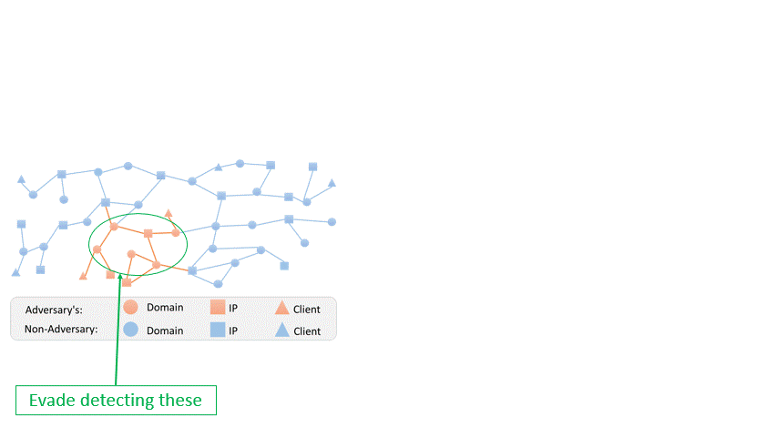
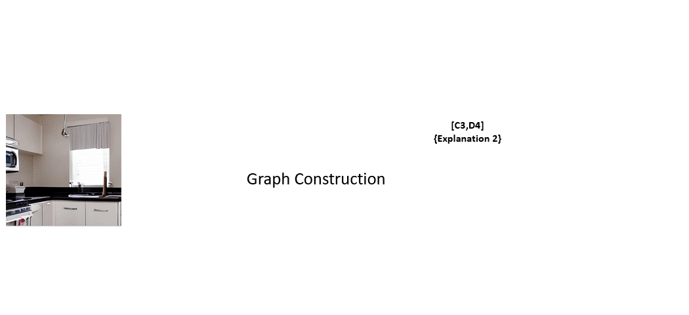
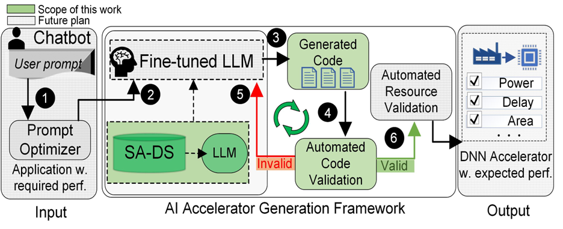
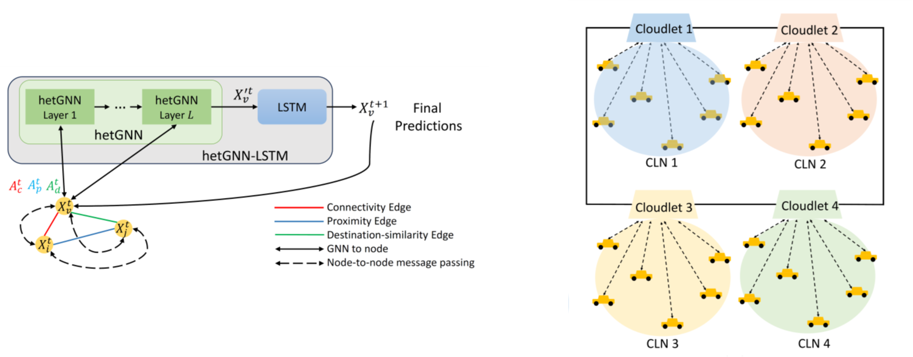

Current funded research appears first, followed by selected research projects and their associated publications, artifacts, or demonstrations.
Research challenge: Critical-infrastructure IoT devices often use custom firmware that is difficult to validate at scale, creating risks involving functional correctness, software vulnerabilities, and hardware incompatibility.
Project direction: The project develops a hardware-aware LLM verification framework for IoT firmware. The funded project description organizes the approach across input-level optimization, representation-level graph/semantic reasoning, and system-level integration with external security scanners and hardware simulators.
Research challenge: Mobile LLM agents interact with applications, notifications, third-party SDKs, and privileged system resources. These interactions can expose agents to adversarial inputs and confused-deputy behavior across application boundaries.
Project direction: The funded project studies automated generation of realistic adversarial scenarios, principled measurement of agent misbehavior, and graph-based runtime defenses for detecting and mitigating confused-deputy behavior.
Research challenge: LLM-generated code can be functional while still containing security vulnerabilities.
Approach: PromSec develops prompt optimization for secure and functional code generation; SGCode demonstrates a flexible prompt-optimizing system built around this research direction.

ACM CCS 2024; related WIPO (PCT) patent application WO2025188204A1.
Research challenge: Graph-based malicious-domain detectors can be targeted by coordinated changes to multiple attacker-controlled entities.
Approach: MintA studies black-box multi-instance evasion against GNN-based malicious-domain detection and evaluates the attack against defenses including outlier detection and graph purification.

IEEE Symposium on Security and Privacy (S&P) 2024.
Research challenge: Deepfake detection requires methods that can leverage complementary visual and semantic evidence while remaining robust across manipulation types.
Approach: ViGText combines vision-language model explanations with graph neural networks for deepfake image detection.

33rd Network and Distributed System Security Symposium (NDSS 2026), San Diego, CA, Feb. 2026.
Research direction: Explore LLM-based methods and datasets for artificial-intelligence accelerator design generation.
Selected outcomes: FedChip studies federated LLMs for AI accelerator chip design; SA-DS provides a dataset for LLM-driven AI accelerator design generation.

ICLAD 2025 (FedChip); IEEE ISCAS 2025 (SA-DS).
Research direction: Study stealthy backdoor attacks against graph-neural-network-based malicious-domain detection through DNS perturbations.
IEEE Open Journal of the Communications Society, vol. 6, pp. 7823–7841, Sep. 2025.
Research direction: Edge-computing inference with heterogeneous graph neural networks for traffic demand forecasting.

IEEE Transactions on Vehicular Technology, Jan. 2024.